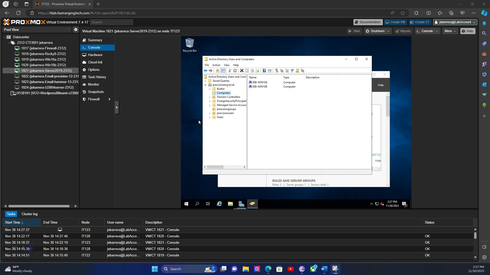
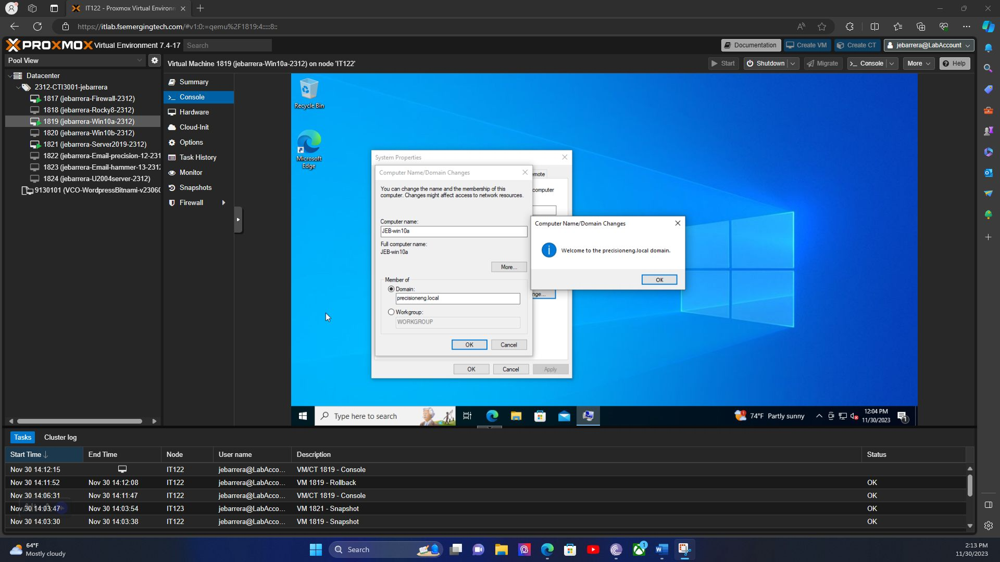
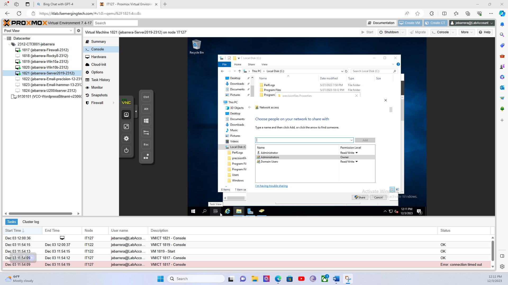
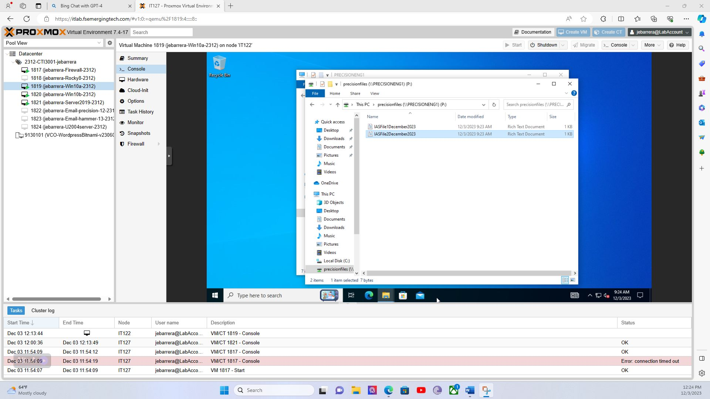
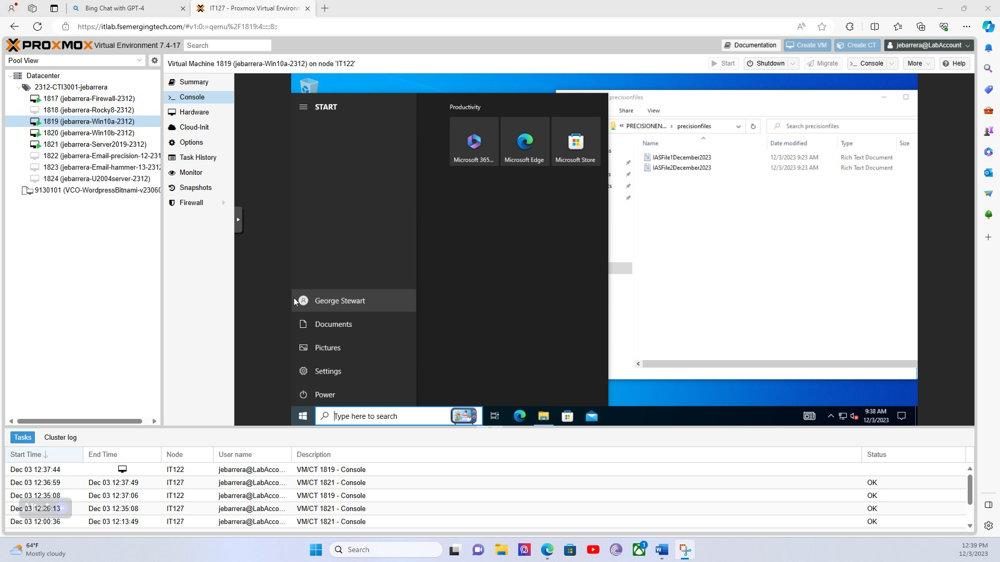

A step-by-step walkthrough of setting up a small-business style network: one central computer (the "domain controller") manages logins for every user and workstation. Click any screenshot below to view it full-size.
Active DirectoryDomain joinShared drivesLeast privilege
What's Active Directory? It's Microsoft's system for managing every user account and computer on a business network from one place, instead of setting up logins on each computer individually. In this lab, the network domain is named precisioneng.local — think of it as the "company name" every computer and user account belongs to.
Step 1
Built the lab computers — a server that manages logins, and two Windows 10 computers that employees would actually use.
All of this ran as virtual machines (VMs) — full, separate "computers" simulated in software on one physical host, so I could safely build and break a real network without needing four physical PCs. One VM (Server 2019) acts as the domain controller — the "manager" that every other computer checks in with.

What you're looking at: the left-hand list shows every virtual computer in the lab — a firewall, a Linux server, two Windows 10 computers (Win10a and Win10b), and the Server 2019 domain controller. The window in the middle is the domain controller's own screen, open to the tool used to manage the network (Active Directory Users and Computers). It already shows JEB-WIN10A and JEB-WIN10B listed as computers that successfully joined the network — proof both workstations are checked into the domain.Step 2
Connected ("joined") a Windows 10 computer to the precisioneng.local network.
"Joining a domain" is what makes a computer trust the central server for logins — after this, any approved employee can sign in on that computer using their company username and password instead of a separate local account. This is one of the most common help desk tickets: a new computer that needs to be added to the company network before an employee can use it.

What you're looking at: a Windows 10 computer named JEB-win10a, in the middle of changing its network settings. The small pop-up in the center is the confirmation message Windows shows the moment the join succeeds: "Welcome to the precisioneng.local domain." That message only appears after the computer has verified its identity with the domain controller from Step 1.Step 3
Created individual employee user accounts on the domain controller, organized into a folder ("OU") just for this company's staff.
Every employee gets their own separate login instead of everyone sharing one account — that way, actions can be traced back to a specific person, and access can be removed for just one person without affecting anyone else. Organizational Units (OUs) are simply folders used to group accounts so permissions and policies can be applied to a whole group at once.
What you're looking at: the Active Directory Users and Computers console — the main tool IT staff use to manage every account on the network. The folder called precisionusers is selected on the left, and its contents are listed on the right: three individual employee accounts (Billy Martinez, George Stewart, and Jacob Barrera), each type "User." These are the accounts that employees would actually log in with.Step 4
Created a shared folder on the server and granted the employee group read/write access to it — nobody outside that group could open it.
Before anyone can use a shared folder, someone has to decide who's allowed in. Instead of opening it up to everyone or sharing it with each person one at a time, I granted access to the Domain Users group as a whole — so any current employee account automatically has access, and the permission only has to be set once. This is the "least privilege" idea in practice: access is granted to a specific group for a specific reason, not handed out by default.

What you're looking at: the Windows sharing dialog for the precisionfiles folder on the server. Under "Choose people on your network to share with," the Domain Users group has been added with Read/Write permission — meaning every employee account on the domain can open, add, and edit files in this folder, without each person having to be added individually.Step 5
Connected ("mapped") that shared folder to the Windows 10 computer so it shows up as a normal network drive.
A shared folder lives on the server, not on any one employee's computer — so everyone with permission can open the same files from their own desk, and nothing is lost if one computer breaks. Mapping it as a network drive (here, drive P:) makes that shared folder show up in File Explorer just like a regular hard drive, so it feels normal to use day-to-day.

What you're looking at: File Explorer on the Windows 10 computer, open to a folder labeled precisionfiles (\\PRECISIONENG1) (P:) — that path means "the precisionfiles folder, located on the server named PRECISIONENG1, mapped locally as drive P." Inside are two shared documents, proving the connection between the workstation and the server's shared storage is actually working.Step 6
Logged in as a regular employee — not the administrator — to confirm the whole setup actually worked from their point of view.
Setting something up as an administrator and having it actually work for a normal employee are two different things — a lot of real help desk tickets exist because the two don't match. So I signed in as George Stewart, one of the accounts created in Step 3, on the exact same Windows 10 computer, and confirmed his account could see and open the shared drive without any extra setup on his end.

What you're looking at: the Windows Start menu, showing George Stewart signed in (bottom-left) instead of the administrator account used to build everything. On the right, File Explorer is already open to the same precisionfiles (P:) drive from Step 5, showing both shared files — proof that a real employee account, with no special setup, could log in and immediately access the shared folder exactly as intended.
Where this lab came from
Full Sail University — Introduction to Application Servers course, Week 2 lab assignments (activity2.5.docx and activity_2.4.docx). These are private coursework files with instructor notes and aren't published publicly; the screenshots above are the actual proof-of-work images submitted for grading.